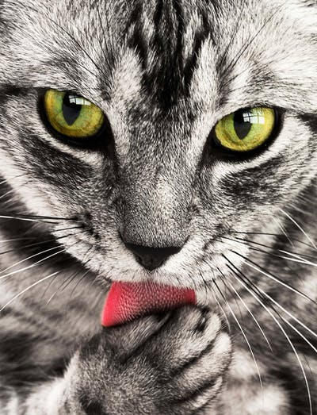
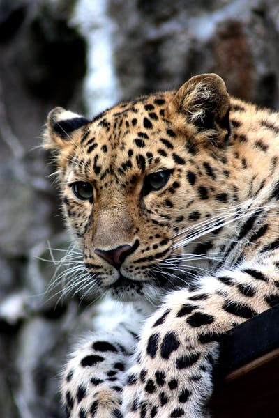
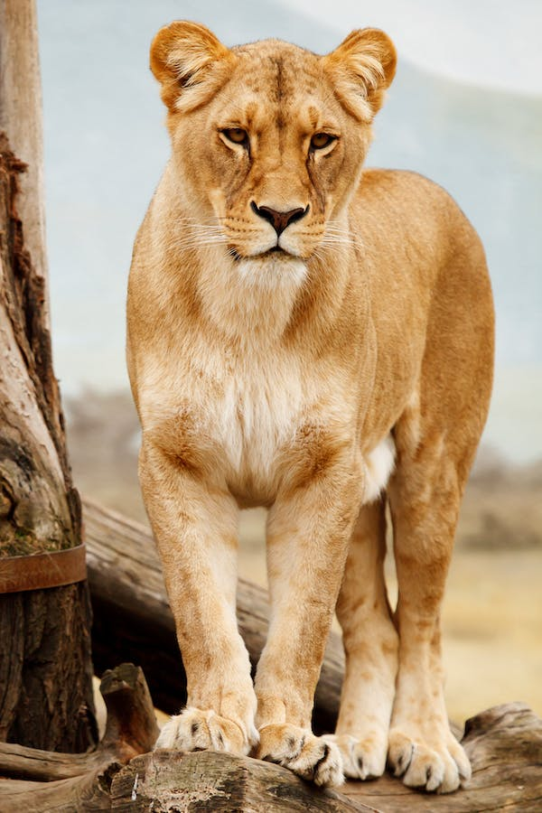

The cat is a domestic species of small carnivorous mammal. It is the only domesticated species in
the family Felidae and is commonly referred to as the domestic cat or house cat to distinguish it
from the wild members of the family.Cats have very sweet features. It has two beautiful eyes, adorably
tiny paws, sharp claws, and two perky ears which are very sensitive to sounds. It has a tiny body covered
with smooth fur and it has a furry tail as well. Cats have an adorable face with a tiny nose, a big mouth
and a few whiskers under its nose. It has two beautiful eyes, adorably tiny paws, sharp claws,and two perky
ears which are very sensitive to sounds. It has a tiny body covered with smooth fur and it has a furry tail as well.
Cats have an adorable face with a tiny nose, a big mouth and a few whiskers under its nose.Cats are generally white
in colour but can also be brown, black, grey, cream or buff.

Tigers have reddish-orange coats with prominent black stripes, white bellies and white spots on their ears.
Like a human fingerprint, no two tigers have the exact same markings. Because of this, researchers can use stripe
patterns to identify different individuals when studying tigers in the wild. Tigers are powerful hunters with sharp
teeth, strong jaws and agile bodies. They are the largest terrestrial mammal whose diet consists entirely of meat; the
largest tiger ever recorded was an Amur tiger. The tiger's closest relative is the lion. In fact, without fur, it is
difficult to distinguish a tiger from a lion.Tigers are among the largest cats in the world, and the Amur tiger is the
largest subspecies with males weighing up to 660 pounds (300 kilograms) and measuring 10 feet (3 meters). Sumatran tigers
are the smallest subspecies, maxing out at 310 pounds (140 kilograms) and 8 feet (2.4 meters)
The dog is a pet animal. A dog has sharp teeth so that it can eat flesh very easily, it has four legs, two ears, two eyes,
a tail, a mouth, and a nose. It is a very clever animal and is very useful in catching thieves. It runs very fast, barks
and attacks the strangers. A dog saves the life of the master from danger. One can find dogs everywhere in the world.
Dogs are a very faithful animal. It has a sharp mind and a strong sense of hearing smelling the things. It also has many
qualities like swimming in the water, jumping from anywhere, good smelling sense.A dog has a strong power of smell.
They are more liked by people because of their faithfulness. They are intelligent, they are watchfulness. The dogs have
many colors such as grey, white, black, brown and red. They are of many kinds such as bloodhound, greyhound, german shepherd,
Labrador, Rottweiler, bulldog poodle, etc. Usually, the dog eats fish, meat, milk, rice, bread, etc. Dogs are sometimes called canines.
Dogs are sometimes referred to as man's best friend because they are kept as domestic pets and are usually loyal and like being around humans.

Lions have strong, compact bodies and powerful forelegs, teeth and jaws for pulling down and killing prey. Their coats are yellow-gold, and
adult males have shaggy manes that range in color from blond to reddish-brown to black. The length and color of a lion's mane is likely determined
by age, genetics and hormones. Young lions have light spotting on their coats that disappears as they grow.Lions stand between 3.5 and 4 feet
(1 and 1.2 meters) tall at the shoulder. Males grow to lengths of 10 feet (3 meters) and have a 2 to 3 foot (60 to 91 centimeter) tail. they
weigh from 330 to 550 pounds (150 to 250 kilograms). Slightly smaller, females grow to lengths of 9 feet (2.7 meters) and weigh between 265
and 395 pounds.Lions primarily eat large animals that weigh from 100 to 1,000 pounds (45 to 453 kilograms), such as zebra and wildebeest.
In times of shortage, they also catch and eat a variety of smaller animals, from rodents to reptiles.Lions also steal kills from hyenas,
leopards and other predators. At times, they may lose their own catches to hyena groups. Lions may also feed on domestic livestock, especially
in areas near villages.
Click on the links below to navigate:
Go to Home Page |
Go to About Page |
Bus Sewa Time Table and Fare List
| Name of Bus |
Place |
Destination |
Time |
Fare |
| Arrival |
Departure |
| Western Express |
Kathmandu |
Nepalgunj |
07:30 |
08:00 |
Rs. 989.00 |
| Mankamana Bus Sewa |
Kathmandu |
Manakamana |
09:00 |
10:15 |
Rs. 450.00 |
| Buddha Express |
Kathmandu |
Butwal |
11:30 |
12:25 |
Rs. 645.05 |
| Baba Tourist Express |
Kathmandu |
Pokahar |
7:30 |
8:00 |
Rs. 756.00 |
| Purba Express |
Kathmandu |
Biratnagar |
16:00 |
17:30 |
Rs. 345.00 |
{kind=link}